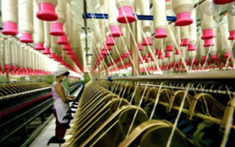
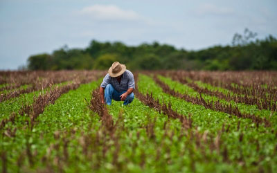
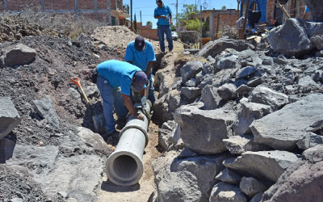
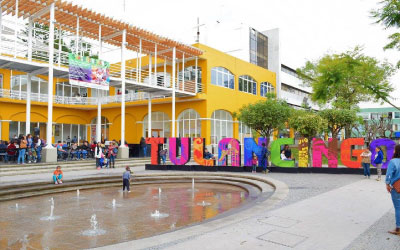
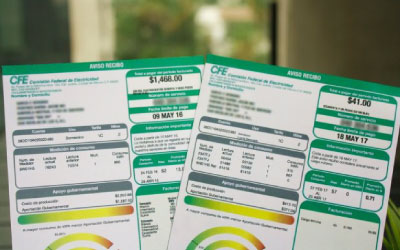

{kind=link}
Amiga ama de casa, voy a darte lo que necesitas para iniciar tu propio huerto, voy a enseñarte cómo hacerlo y voy a comprarte todo lo que produzcas. Ya sea en tu patio o dentro de tu casa con un huerto vertical, podrás cultivar gran variedad de hortalizas, ya sea para consumo familiar o como negocio.
Tulancingo de Bravo (municipio)
Tulancingo fundada por los Toltecas y luego por Chichimecas. Municipio históricamente caracterizado por las inundaciones, en donde la relación con éstos eventos naturales manejada apropiadamente con la estructura y diseño necesario puede ser una de sus más grandes fortalezas, ya que la humedad del suelo, permite sembrar hortalizas, flores como la amapola y alfalfa.
Movimiento Naranja
En una determinación histórica y por unanimidad, los 586 delegados asistentes a la Tercera Asamblea Nacional Extraordinaria de Convergencia aprobaron el 31 de julio de 2011, reformas de fondo a los documentos básicos que convierten a esa organización, a partir de esa fecha, en Movimiento Ciudadano.
En sesión ordinaria celebrada el 07 de Octubre de 2011, el Consejo General del Instituto Federal Electoral declaró procedentes y constitucionalmente válidas las reformas a los documentos básicos de Convergencia, aprobadas en Asamblea Nacional del 31 de julio, y que dan paso a su transformación en Movimiento Ciudadano.
El Movimiento Ciudadano conserva el color naranja y el emblema es representado por un águila en posición de ascenso, sobre las palabras Movimiento Ciudadano.
Algunos de los problemas a solucionar:

Hacerle frente a la situación económica actual y futura, resultado de la pandemia, con la generación de empleos dignos y el apoyo a empresas socialmente comprometidas.

Apoyar al sector agrícola para hacerle frente a las pérdidas generadas por inundaciones y plantear soluciones para evitar situaciones similares en el futuro.

Solucionar los problemas de inundaciones a través del seguimiento y construcción de lineas de drenaje apropiadas para el municipio y sus necesidades.
Mejorar la educación de nuestros niños y jóvenes, así como adultos.

Ofrecer opciones para disminuir las emisiones de CO2 para mejorar la calidad de vida de nuestros ciudadanos y al mismo tiempo disminuir el costo de la electricidad.

Hacerle frente a la situación económica actual y futura, resultado de la pandemia, con la generación de empleos dignos y el apoyo a empresas socialmente comprometidas.
Propuestas
Mujeres Productivas
Transporte Gratis
Es muy importante fomentar la educación y apoyar a las familias más vulnerables. Por ello pondré transportes escolares gratuitos que lleven a niños y niñas de las comunidades más alejadas hasta sus escuelas y de regreso. De este modo, niños y niñas, que normalmente van y vienen solos, irán seguros a sus escuelas y las familias tendrán un ahorro de entre 40 y 60 pesos diarios.


Energía renovable
Con el propósito de no solo cuidar nuestro ecosistema si no también de economizar, es decir, reducir el costo de la electricidad que se usa para los negocios y el hogar.